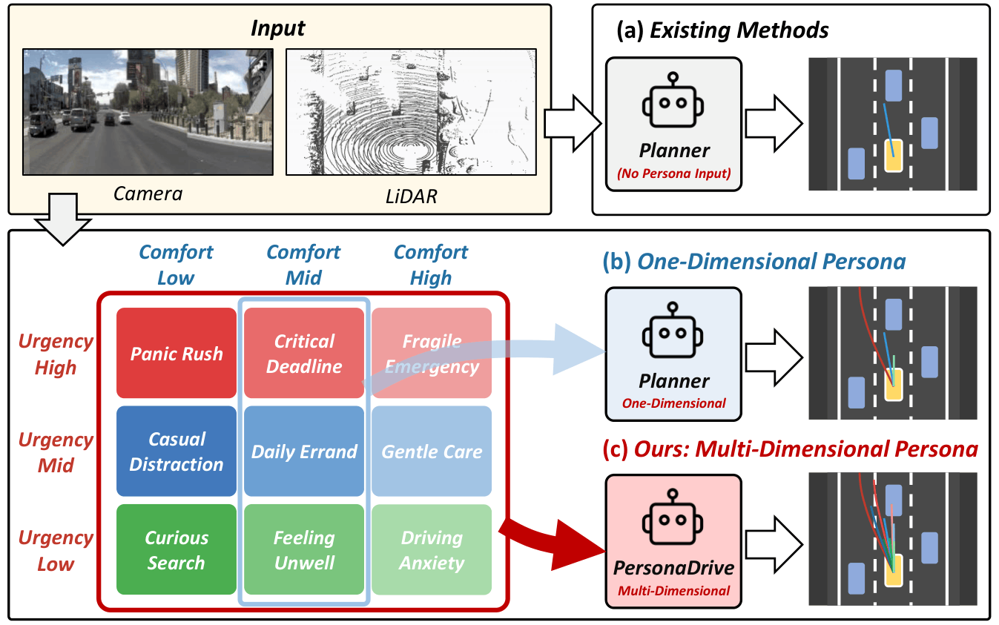
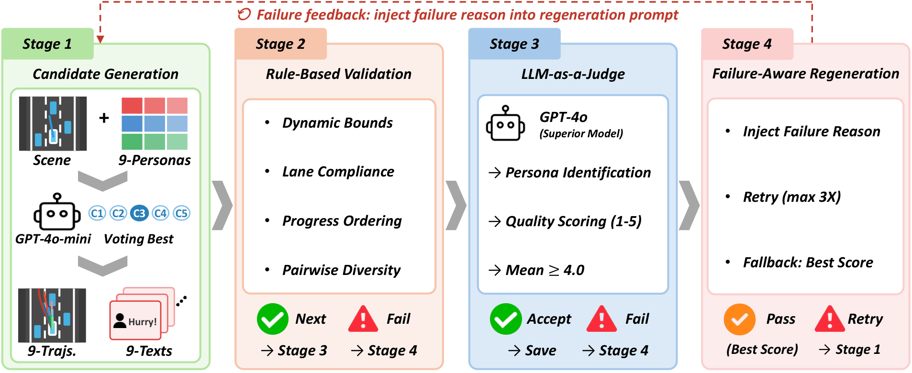
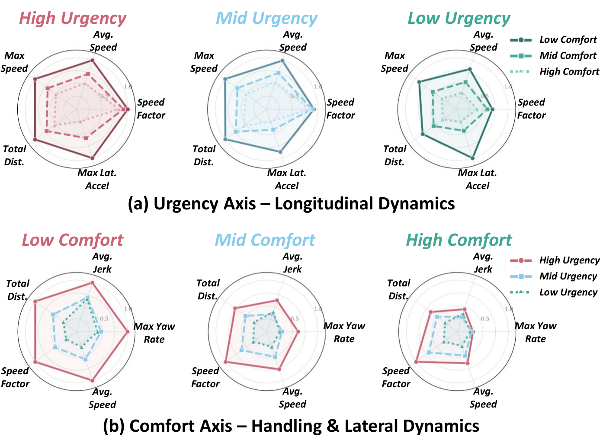
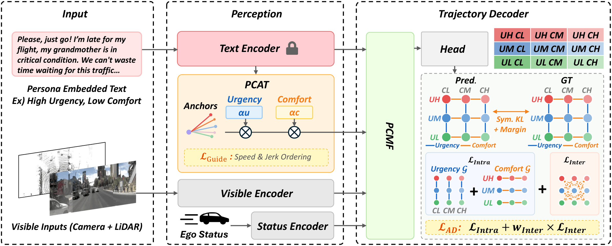
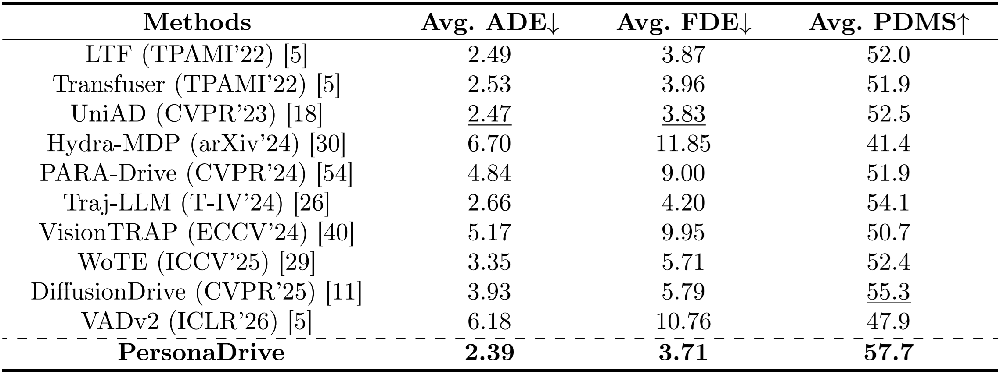
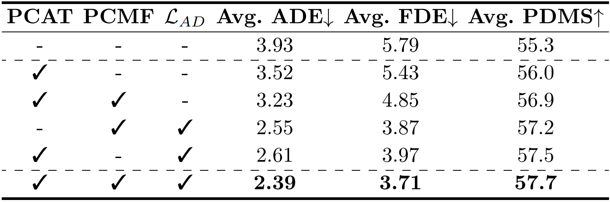
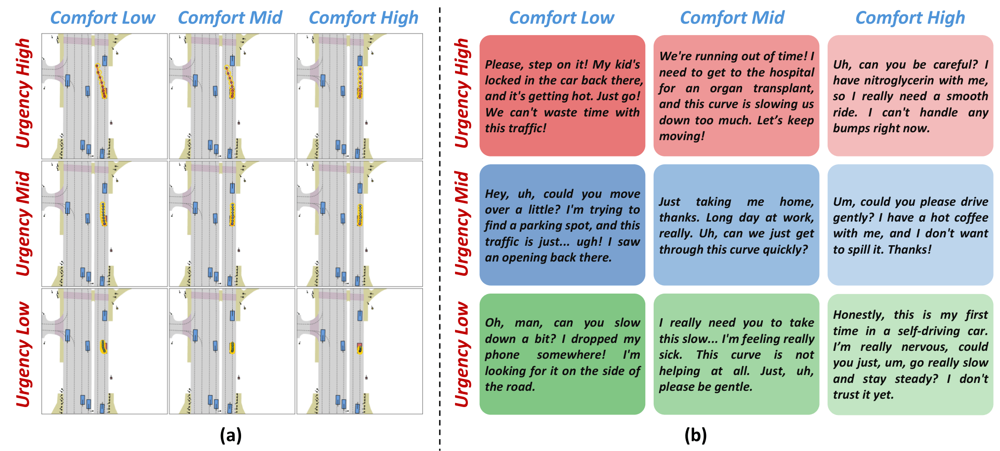
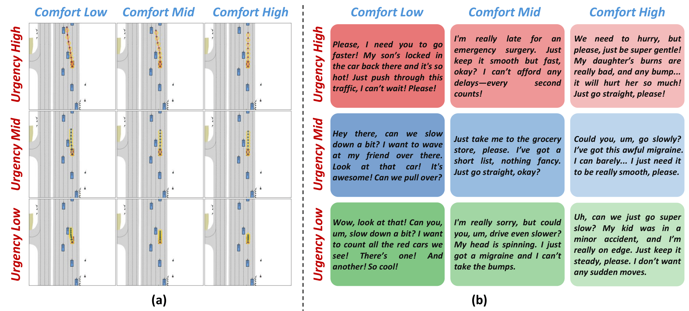
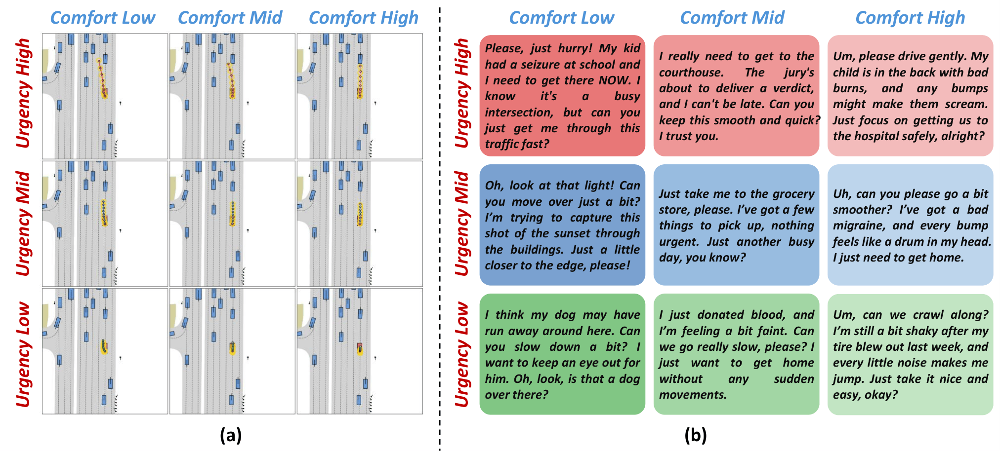

PersonaDrive: Controllable Trajectory Prediction with Multi-Dimensional Driving Personas
ECCV 2026
Abstract
Recent trajectory prediction and end-to-end driving methods are robust but offer little control over driving behavior, and existing benchmarks cover at most a single urgency spectrum. We introduce the Persona-Conditioned Trajectory (PCT) dataset, which decomposes driving persona into two axes, Temporal Urgency and Ride Comfort, and pairs each of the resulting nine personas with natural-language descriptions and trajectories. We also propose PersonaDrive, a framework that learns personas from language and generates persona-specific trajectories through a Persona-Conditioned Anchor Transform (PCAT) and Persona-Conditioned Multi-Modal Fusion (PCMF), trained with a Hierarchical Guide Loss and an Axis-Decomposed Diversity Loss. PersonaDrive consistently outperforms baselines across all nine personas, with the largest gains in multi-dimensional scenarios.
Motivation
A single urgency spectrum (emergency / normal / relaxed) cannot tell apart personas that are equally urgent but need different dynamics. A paramedic protecting a critical patient wants a smooth, jerk-free ride, while a firefighter racing to a blaze accepts aggressive maneuvers. We therefore decompose persona into two orthogonal axes, Temporal Urgency (how fast to progress) and Ride Comfort (how smoothly), with three levels each. This yields nine personas that natural language can express beyond a one-hot label.

Figure 1. Motivation. (a) Existing planners take no persona input and produce a single behavior. (b) One-dimensional persona methods cover only a single urgency spectrum. (c) PersonaDrive conditions on a multi-dimensional persona that combines Temporal Urgency and Ride Comfort into a 3×3 grid, generating distinct, controllable trajectories from the same scene.
Persona-Conditioned Trajectory (PCT) Dataset
Each persona is a natural-language passenger request that encodes urgency and comfort implicitly, covering the full 3×3 grid without explicit axis labels. A four-stage pipeline produces nine trajectory and text pairs for every scene in OpenScene. GPT-4o-mini first generates candidates, rule-based checks validate them, GPT-4o then scores them as an LLM judge, and failed samples are regenerated with the failure reason fed back into the prompt. Humans identify the correct persona with 85.7% accuracy, and independent re-judging with Claude and Gemini agrees strongly (κ = 0.978 and 0.804).

Figure 2. Dataset generation pipeline. Stage 1 generates candidate trajectory and text pairs with GPT-4o-mini voting. Stage 2 applies rule-based validation covering dynamic bounds, lane compliance, progress ordering, and pairwise diversity. Stage 3 uses GPT-4o as an LLM judge for persona identification and quality scoring. Stage 4 regenerates failed samples by injecting the failure reason into the prompt, with up to three retries.

Figure 3. Dataset statistics. (a) Along the urgency axis, speed and travel distance grow with urgency level. (b) Along the comfort axis, jerk and yaw rate shrink as comfort increases. The two axes control complementary, well-separated aspects of the trajectories.
Method
PersonaDrive takes camera, LiDAR, and a persona text encoded by a frozen MiniLM. PCAT modulates the anchor bank, using an urgency scalar αu to scale travel distance and a per-timestep comfort vector αc to shape the trajectory. PCMF then fuses BEV, ego, persona, and anchor queries into persona-aware features. Two objectives supervise training on top of the DiffusionDrive baseline: a Hierarchical Guide Loss that enforces axis-aligned orderings (higher urgency means longer trajectories, and lower comfort allows higher jerk) and an Axis-Decomposed Diversity Loss that prevents diagonal mode collapse.

Figure 4. Overall architecture. A frozen text encoder embeds the persona request. PCAT modulates the anchor bank with an urgency scalar αu and a comfort vector αc under the Hierarchical Guide Loss. PCMF fuses persona, visible, and ego-status features, and the decoder is trained with the Axis-Decomposed Diversity Loss (𝐿AD) over the 3×3 persona grid.
Results
On the NAVSIM closed-loop benchmark (all baselines share the same frozen text encoder), PersonaDrive achieves the lowest ADE/FDE and the highest PDMS, winning ADE/FDE in all nine persona cells.

Table 1. Main results on the NAVSIM navtest split, averaged across all nine persona categories. PersonaDrive achieves the best ADE, FDE, and PDMS among all baselines.

Table 2. Ablation study. PCAT, PCMF, and the Axis-Decomposed Diversity Loss (𝐿AD) each contribute, and the full model performs best, improving ADE from 3.93 to 2.39 and PDMS from 55.3 to 57.7 over the baseline.
Qualitative Results
Higher urgency yields longer trajectories, and higher comfort yields smoother motion. In each figure, (a) shows the nine predicted trajectories over the 3×3 persona grid and (b) shows the natural-language passenger request that conditioned each cell.

Figure 5. Qualitative results (scene 1). Rows vary Temporal Urgency and columns vary Ride Comfort.

Figure 6. Qualitative results (scene 2).

Figure 7. Qualitative results (scene 3).
BibTeX
@misc{lee2026personadrivecontrollabletrajectoryprediction,
title={PersonaDrive: Controllable Trajectory Prediction with Multi-Dimensional Driving Personas},
author={Chan Lee and Kimin Yun and Yuseok Bae and Seong Tae Kim and Jung Uk Kim},
year={2026},
eprint={2608.15230},
archivePrefix={arXiv},
primaryClass={cs.CV},
url={https://arxiv.org/abs/2608.15230},
}